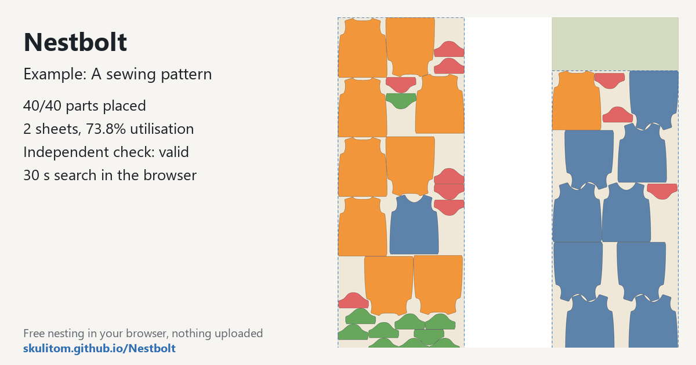

Nest a sewing pattern with grain constraints
This example requests ten FreeSewing T-shirts: 40 pieces on a 1500 mm fabric roll. Grain keeps the pieces at 0° or 180°. It is a useful way to explore nesting when rotation permissions are restricted, using a 1500 × 4000 mm sheet to describe the job's fabric area.
Free, MIT-licensed, no account; your files never leave your computer.
What this job asks for
The four part types are a front, a back, a left sleeve and a right sleeve, with ten copies of each. The example uses no margin, 3 mm spacing between parts and 1 mm edge spacing. A zero margin therefore does not remove the separate edge-spacing setting.
| Sheet (mm) | 1500 × 4000 |
|---|---|
| Margin | 0 mm |
| Part spacing | 3 mm |
| Edge spacing | 1 mm |
| Allowed rotations | 0°, 180° |
| Part types and copies | 4 types; 40 copies: front, back, left sleeve and right sleeve × 10 each |
| Time budget | 30 seconds |
Measured layout
Measured on 2026-10-20 with the build this site hosts (main at c9b0176), in a headless Chromium browser on a desktop PC, with the example’s own settings: the 30-second search placed 40 of 40 pieces on 2 sheets of 1500 × 4000 mm, every piece at 0° or 180°, with 73.8% utilisation and material 1.842 sheets; the second sheet keeps a clear 1500 × 633 mm offcut. The independent check: valid. Results vary a little between runs and computers, because the search stops at its time limit.

Try it yourself
Open the app, click the button “Try an example: a sewing pattern”; it loads the drawing and starts nesting straight away. Or download the sewing drawing and drop it in. Set the quantities, fabric dimensions and restricted rotation list shown above.

Watch how the pieces are arranged while retaining their permitted orientations. The app shows the best layout so far, with the clear offcut above the box around the parts. Every returned layout passes the independent validator, including its rotation and quantity checks.
Use your own file
- For a job with the same grain constraint, use an explicit 0°/180° rotation list.
- Enter the roll width and the length of fabric you want to describe as the sheet. This example uses 1500 × 4000 mm.
- Review the number of fronts, backs and sleeves, and set margin, part spacing and edge spacing separately.
Source and licence
The pattern pieces were generated with FreeSewing 4.10.2, using Teagan. They are MIT licensed, copyright © 2022 Joost De Cock. The full MIT notice is in the drawing licence file. Nestbolt gives no machine-safety or fit certification; the nesting result does not certify garment fit.